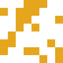

<!DOCTYPE html>
<html lang="en">

<head>
    <meta charset="UTF-8">
    <meta name="viewport" content="width=device-width, initial-scale=1.0">
    <meta http-equiv="X-UA-Compatible" content="ie=edge">
    <title>Document</title>
    <link rel="stylesheet" href="css/main.css">
</head>

<body>
    <header>
        <ul>
            <li><a href="#text">Text</a></li>
            <li><a href="#bilder">Bilder</a></li>
        </ul>
    </header>
    <main>
        <section id="text">
            <h1>Page #1</h1>
            <p>Det här, eller den layout vi arbetade med senaste är din grund, dvs. 2 spalter eller denna helsides
                layout för att skapa en egen sida.</p>
            <p>Tanken är att öva att snabbt skapa en grund att fylla med innehåll.</p>
            <p>Vi skapar index.html, skriver html tabbar och låter utvecklingsmiljön hjälpa oss. Se <a
                    href="https://github.com/jensnti/wu1-layout">mitt repo från förra veckan</a> för steg för steg
                instruktioner.</p>
            <p>Det är ofta svårt med innehållet som text, så prova gärna bilder eller annat. Du kan alltid använda Lorem
                Ipsum för att fylla ut.</p>
            <h2>Uppgift</h2>
            <ul>
                <li>Välj ett par fonter, använd gärna <a href="https://fontjoy.com/">Font joy</a>, du hittar sedan
                    fonterna på <a href="https://fonts.google.com/">Google fonts</a>.</li>
                <li>Vill du ha hjälp med logo och stil så kan du testa <a href="https://brandmark.io/">Brandmark</a>.
                </li>
                <li>För färger så prova gärna att skapa ett schema med <a href="https://coolors.co/">Coolors</a></li>
                <li>Om du vill ha bilder som bakgrund kan du prova ett verktyg som <a
                        href="https://coolbackgrounds.io/">Coolbackgrounds</a>.</li>
                <li>Vill du ha porträtt för att skapa något så finns det massor med verktyg online för detta, tex. <a
                        href="https://robohash.org/">Robohash</a>.</li>
                <li>Behöver du placeholder bilder, kolla <a href="https://placeholder.com/">Placeholder</a>.</li>
            </ul>
            <p>Du får gärna ta egna bilder med din telefon och använda på sidan.</p>
            <h3>Stilar</h3>
            <p>Testa på att använda css för att skapa din sidas stil. Prova allt du kan! Läs och sök efter information.
            </p>
            <ul>
                <li><a href="https://developer.mozilla.org/en-US/docs/Web/CSS">CSS på MDN</a></li>
                <li><a href="https://www.w3schools.com/css/default.asp">W3Schools</a></li>
            </ul>
            <h3>Validering</h3>
            <p>Prova på att validera din sida allteftersom du jobbar. Antingen genom att hosta på GIT pages eller genom
                att klistra in koden och testa. Du hittar verktyget på <a href="https://validator.nu">validator. nu</a>.
            </p>
            <p> 
                s[ xœ /@пh  ¼  CÿÿÿD ?û:    Æ ÿxÚ¥}
                t×uæôP l«MÜ–n\#•ã¤D+'N)×Çœ#7V`*’@ã°ìNÇI#<\%¶‚$1‚èeŽˆÇ2¶”×Y–Ð*†¼%&²6lO,–»Þnˆäì–@ƒ¨¡*à†ˆ#ܶ”¹÷¾Ÿ™Io“Ý!~¾¹ÿ÷¾û¯Ÿ?~nnniiiuuµuåÊj«µ¸°°´¸87;{~jjann|ttb||jbbtxxõÊ5>v,,ËK³³‹ss££Sããöî½²¸¸×íVeY>x°rþ|>yjjib½sç®Ûn»íÆwÞxãu‚p£ \nŸZžoMM´fϯŽ_VW§ÆW‡Ã­còêø±Uõàºzp5|`ýàÎõóã«S£WFÕÕay]=°.»×ý;ÎOpjXõ”ì]>èÞuebxïÎÛÖÃ‰c²ß€n»yuØ¿®î]—w®ÎMŸŸ‚wS‡Õ°|
            </p>

        </section>
        <section id="bilder">
            <h1>Page #2</h1>
            <p>Lycka till!</p>
            
            
           
        </section>
        <footer>
            <p>Page footer</p>
        </footer>
    </main>

</body>

</html>